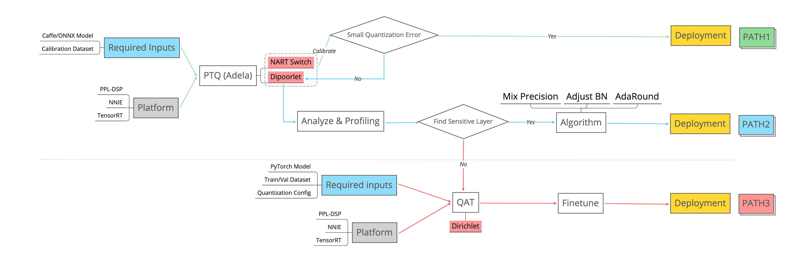

How to quantize your model?¶
Two concepts¶
Post Training Quantization (PTQ):
Just calibrate quantization parameters by a small-scale calibration dataset and does not update the weights by backward propogation.
Quantization Aware Training (QAT):
Finetuning a trained full-precision model in a quantization aware scheme to optimize the model to a quantization-friendly one.
Three ways to quantize your model¶
We provide three tools to quantize your model:
Nart Switch (Adela)
Dipoorlet
Dirichlet
From 1 to 3, the required human effort and time cost becomes higher but the achieved accuracy may become higher.
Detailed Comparison is listed below:
Recommended Pipeline¶
We summarize a quantization pipeline to improve the efficiency of producing a quantized model:
PATH1 (green):
Directly follow the instructions of Adela / Nart Switch. It encapsules the official post training quantization tool provided by the hardware company. Detailed instructions see Adela Documentation or Nart Documentation. If you find the quantization error is large and the accuracy degradation is unacceptable. You can turn to the PATH2 (blue). For some hardware (e.g., PPL-DSP), no official quantization tool is provided. In this case, you should start directly from PATH2.
PATH2 (blue):
Use the self-developed post training quantization tool Dipoorlet to profile and locate the quantiation-sensitive layer and try more advanced algorithms. If we find the reason resulting in the sensitivity, then we can apply corresponding method to recover the accuracy. Detailed instructions see Dipoorlet Documentation. If all the algorithms do not work, you need to resort to PATH3 (red).
PATH3 (red):
Insert Dirichlet to your training code for quantization aware training. You need to prepare a quantization config to specify where and how to quantize for the deployment on target hardware. Detailed instructions see Dirichlet Documentation.
Overall, we are devoted to make more quantized models can be generated from PATH1/PATH2 and less models require PATH3. Then the complexity can be reduced and the efficiency can be improved.